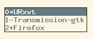
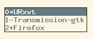

Ratpoison, Miscellaneous

This is the fifth post about the Ratpoison window manager.
These are a few extra things I use in Ratpoison to make my life more comfortable that can fit in a single post, so here you go.
Volume Control
Using this Ratpoison configuration:
bind braceright exec volume_control.sh high
bind braceleft exec volume_control.sh low
bind bar exec volume_control.sh medium
bind slash exec volume_control.sh ask
bind bracketright exec volume_control.sh inc
bind bracketleft exec volume_control.sh dec
bind backslash exec volume_control.sh mute
We can easily control the volume with these commands (after C-t):
[ Increment 5%
] Decrement 5%
\ Toggle Mute
{ Set to a low value (10%)
} Set to maximum value (100%)
| Set to medium value (50%)
/ Prompt for volume value
This is achieved using the volume_control.sh script.
The script depends on amixer. And you can get it from my Dotfiles.
Vi like bindings
Using this Ratpoison configuration we can make it behave more like vi:
bind j focusdown
bind h focusleft
bind k focusup
bind l focusright
bind J exchangedown
bind H exchangeleft
bind K exchangeup
bind L exchangeright
bind s vsplit
bind v hsplit
Now we can move between splits with {h,j,k,l}, exchange splits with {H,J,K,L} and create horizontal and vertical splits with {s,v} respectively.
Fast application switching
Using this Ratpoison configuration we can bind some keys dedicated to fast switch to the most common applications we use, urxvt and firefox in my case:
bind c exec app_select.sh terminal
bind e exec app_select.sh firefox
We can now fast switch to them with:
C-s e Firefox (mnemonic ‘explorer’) C-s c Terminal emulator
This is achieved using the app_select.sh script.
You can get it from my Dotfiles.
Interactive window selection
Using this Ratpoison configuration:
bind w exec window_select.sh
We can interactive select and change windows from a nice menu:

This is achieved using the window_select script.
The script depends on ratmen And you can get it from my Dotfiles.
Screen shots
Using this Ratpoison configuration:
bind at exec scrot -u -z -q 100 -e 'mv $f ~/.shots/'
We can take screen shots with C-t @ that will be saved in ~/.shots
This is achieved using scrot so be sure you have it installed.
Fast calculator
Using this Ratpoison configuration:
bind C exec calculator.sh
We can get a prompt for arithmetic operations.
This is achieved using the calculator.sh script.
The script depends on calc so be sure you have it installed.
And you can get it from my Dotfiles.
Backlight control
Using this Ratpoison configuration:
bind parenright exec backlight_control.sh inc
bind parenleft exec backlight_control.sh dec
bind underscore exec backlight_control.sh toggle
bind S exec xset dpms force off
We can now control backlight with (after C-t):
) Increment backlight
( Decrement backlight
_ Toggle between full and medium light
S Turn off the screen
This is achieved using the backlight_control.sh script.
You can get it from my Dotfiles.
You can find a lot of extra little things in my .ratpoison.rc.
To try it out be sure to define your Ratpoison bindings referencing the right location of the scripts.
This is the fifth post about the Ratpoison window manager.
These are a few extra things I use in Ratpoison to make my life more comfortable that can fit in a single post, so here you go.
Volume Control
Using this Ratpoison configuration:
bind braceright exec volume_control.sh high
bind braceleft exec volume_control.sh low
bind bar exec volume_control.sh medium
bind slash exec volume_control.sh ask
bind bracketright exec volume_control.sh inc
bind bracketleft exec volume_control.sh dec
bind backslash exec volume_control.sh muteWe can easily control the volume with these commands (after C-t):
[ Increment 5%
] Decrement 5%
\ Toggle Mute
{ Set to a low value (10%)
} Set to maximum value (100%)
| Set to medium value (50%)
/ Prompt for volume valueThis is achieved using the volume_control.sh script.
The script depends on amixer. And you can get it from my Dotfiles.
Vi like bindings
Using this Ratpoison configuration we can make it behave more like vi:
bind j focusdown
bind h focusleft
bind k focusup
bind l focusright
bind J exchangedown
bind H exchangeleft
bind K exchangeup
bind L exchangeright
bind s vsplit
bind v hsplitNow we can move between splits with {h,j,k,l}, exchange splits with {H,J,K,L} and create horizontal and vertical splits with {s,v} respectively.
Fast application switching
Using this Ratpoison configuration we can bind some keys dedicated to fast switch to the most common applications we use, urxvt and firefox in my case:
bind c exec app_select.sh terminal
bind e exec app_select.sh firefoxWe can now fast switch to them with:
C-s e Firefox (mnemonic ‘explorer’) C-s c Terminal emulator
This is achieved using the app_select.sh script.
You can get it from my Dotfiles.
Interactive window selection
Using this Ratpoison configuration:
bind w exec window_select.shWe can interactive select and change windows from a nice menu:

This is achieved using the window_select script.
The script depends on ratmen And you can get it from my Dotfiles.
Screen shots
Using this Ratpoison configuration:
bind at exec scrot -u -z -q 100 -e 'mv $f ~/.shots/'We can take screen shots with C-t @ that will be saved in ~/.shots
This is achieved using scrot so be sure you have it installed.
Fast calculator
Using this Ratpoison configuration:
bind C exec calculator.shWe can get a prompt for arithmetic operations.
This is achieved using the calculator.sh script.
The script depends on calc so be sure you have it installed.
And you can get it from my Dotfiles.
Backlight control
Using this Ratpoison configuration:
bind parenright exec backlight_control.sh inc
bind parenleft exec backlight_control.sh dec
bind underscore exec backlight_control.sh toggle
bind S exec xset dpms force offWe can now control backlight with (after C-t):
) Increment backlight
( Decrement backlight
_ Toggle between full and medium light
S Turn off the screenThis is achieved using the backlight_control.sh script.
You can get it from my Dotfiles.
You can find a lot of extra little things in my .ratpoison.rc.
To try it out be sure to define your Ratpoison bindings referencing the right location of the scripts.